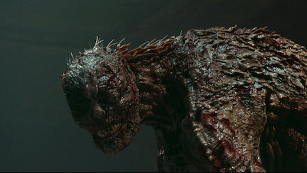

Watch all you want.
Gyeongseong, 1945. In Seoul's grim era under colonial rule, an entrepreneur and a
sleuth fight
for survival and face a monster born out of human greed.
Videos | Gyeongseong Creature
' '
' '
' '
' '
' '
' '
' '
' '
' '
' '
' '
' '
 Episode 926m
Episode 926m
Episodes | Gyeongseong Creature
Season 1
Releasing Year:2023
Gyeongseong, 1945. In Seoul's grim era under colonial rule, an entrepreneur and a sleuth
fight for survival and face a monster born out of human greed.
Episode 1 75m
Facing financial ruin, Jang Tae-sang agrees to track down a missing person —
but two figures trail him. Meanwhile, sinister operations occur underground.
Episode 224m
Yoon Chae-ok and Yoon Jung-won find a lead on Myeong-ja, leading them to a
hospital. Soon, a calamity traps the two inside, leaving Tae-sang concerned.
Episode 325m
Tae-sang decides to reenter the hospital, but discovers that Ryu Sachimoto is
nearby. At the hospital, Chae-ok and Jung-won devise a risky rescue plan.
Episode 426m
Reunited in their search for Myeong-ja, Tae-sang and Chae-ok attempt to also
save other survivors. But soon, the monster makes itself known.
Episode 526m
After coming face to face with the creature, Tae-sang and Chae-ok get
captured. But as one plans his escape, the other stays to find a person dear to her.
Episode 626m
Tae-sang steadfastly remains to save Chae-ok and the captives. On a mission
to find her mother, Chae-ok learns the grisly truth — and confronts the beast.
Episode 725m
With only 10 minutes to act, Tae-sang and Chae-ok risk it all to get everyone
to safety. But just as all goes to plan, one of them may not get out alive.
Episode 825m
An unlikely acquaintance becomes Tae-sang's ticket out of the hospital. After
a touching reunion, Tae-sang and Chae-ok encounter a transformed Myeong-ja.
Episode 926m
After a series of grisly deaths, Ishikawa finds Myeong-ja in her new state.
Tae-sang shares a tender moment with Chae-ok, unaware of her hidden plan.

Episode 1026m
In order to rescue Chae-ok and stop the atrocity, Tae-sang and Jung-won forge
a plan. But just as the coast seems clear, Yukiko Maeda stands in the way.